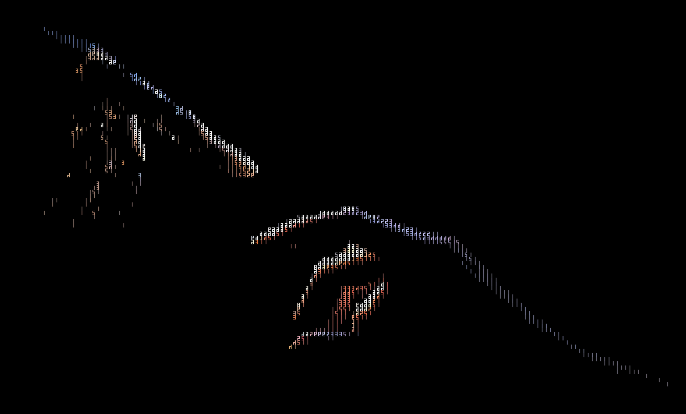

sed, jq, un appel d'API : si ça tourne dans un terminal, ça fait une transformation. Lancé sans shell, avec un délai maximal.Service d'arrière-plan · Extension GNOME Shell · Ubuntu 26.04
UltraClipboard tourne en fond. Quand un texte que tu copies correspond à l'une de tes règles, il le remplace par ce que tu voulais vraiment coller : un calcul par son résultat, des dollars par des euros, une URL par son titre. Une règle, c'est une regex et le programme de ton choix.

Comment ça marche
Une extension GNOME Shell voit chaque copie et la confie à un service qui tourne en fond. Si une de tes règles reconnaît le texte, le résultat remplace le presse-papier avant que tu colles.
Ctrl + C, n'importe où : navigateur, terminal, messagerie.
La première règle dont le motif correspond lance son pipeline. Aucune ne correspond ? Il ne se passe rien.
Une notification confirme. Super + Shift + V remet l'original si tu changes d'avis.
Recettes
Une recette, c'est une règle et son pipeline. Copie celles qui te servent dans ta config, ou écris les tiennes : tout programme qui lit un texte et en rend un autre fait l'affaire.
Pour tout le monde
= à la fin sert de déclencheur. Sans lui, rien ne bouge.
128 * 12 =1536
Recette
pipelines:
calcul:
- command:
- sh
- -c
- |
{ echo 'scale=2'; tr -d '= ' | tr ',' '.'; echo; } | bc | tr '.' ','
rules:
- match: '^\s*[\d\s.,()+*/-]*\d[\d\s.,()]*[+*/-][\d\s.,()+*/-]*\d[\s)]*=\s*$'
pipeline: calcul49 $43,70 €
Recette
pipelines:
dollars-en-euros:
- command:
- sh
- -c
- |
montant=$(tr -cd '0-9.,' | tr ',' '.')
curl -fsS "https://api.frankfurter.dev/v1/latest?amount=$montant&base=USD&symbols=EUR" \
| jq -r '.rates.EUR' \
| LC_ALL=C awk '{printf "%.2f €", $1}' | tr '.' ','
rules:
- match: '(?i)^\s*(\$\s*\d+([.,]\d+)?|\d+([.,]\d+)?\s*(\$|USD|dollars?))\s*$'
pipeline: dollars-en-euros3pm PST00:00 (heure de Paris)
Recette
pipelines:
heure-de-paris:
- trim
- command:
- sh
- -c
- |
TZ=Europe/Paris date -d "$(cat)" '+%H:%M (heure de Paris)'
rules:
- match: '(?i)^\s*\d{1,2}(:\d{2})?\s*(am|pm)?\s+(PST|PDT|MST|MDT|CST|CDT|EST|EDT|UTC|GMT)\s*$'
pipeline: heure-de-paris26.2 miles42,2 km
Recette
pipelines:
miles-en-kilometres: # 26.2 miles → 42,2 km
- command:
- sh
- -c
- |
tr ',' '.' | LC_ALL=C awk '{printf "%.1f km", $1 * 1.609344}' | tr '.' ','
pieds-en-metres: # 5 ft 11 → 1,80 m
- command:
- sh
- -c
- |
tr -c '0-9\n' ' ' | LC_ALL=C awk '{printf "%.2f m", $1 * 0.3048 + $2 * 0.0254}' | tr '.' ','
fahrenheit-en-celsius: # 72°F → 22 °C
- command:
- sh
- -c
- |
tr ',' '.' | LC_ALL=C awk '{printf "%.0f °C", ($1 - 32) * 5 / 9}'
rules:
- match: '(?i)^\s*\d+([.,]\d+)?\s*(mi|miles?)\s*$'
pipeline: miles-en-kilometres
- match: '(?i)^\s*\d+\s*(ft|pieds?)(\s*\d+(\s*in)?)?\s*$'
pipeline: pieds-en-metres
- match: '^\s*-?\d+([.,]\d+)?\s*°\s*F\s*$'
pipeline: fahrenheit-en-celsiusutm_…, fbclid, gclid et consorts. Les autres paramètres restent.
exemple.fr/article?utm_source=lettre&fbclid=IwAR0xexemple.fr/article
Recette
pipelines:
lien-propre:
- trim
- command:
- sed
- -E
- 's/([?&])(utm_[a-z_]+|fbclid|gclid|igshid|mc_eid)=[^&#]*/\1/g; s/([?&])&+/\1/g; s/[?&]+(#|$)/\1/'
rules:
- match: '^\s*https?://\S+[?&](utm_[a-z_]+|fbclid|gclid|igshid|mc_eid)=\S*\s*$'
pipeline: lien-proprecurl et jq. Passe par le réseau : l'URL copiée est envoyée à YouTube.
youtube.com/watch?v=dQw4w9WgXcQ[Rick Astley - Never Gonna Give You Up](…) — [Rick Astley](…)
Recette
pipelines:
youtube-markdown:
- trim
- command:
- sh
- -c
- |
url=$(cat)
curl -fsS --get --data-urlencode "url=$url" --data-urlencode "format=json" https://www.youtube.com/oembed \
| jq -r --arg url "$url" 'def md: gsub("(?<c>[\\[\\]\\\\])"; "\\\(.c)"); "[\(.title | md)](\($url)) — [\(.author_name | md)](\(.author_url))"'
rules:
- match: '^https?://(www\.)?(youtube\.com/watch|youtu\.be/)'
pipeline: youtube-markdownPour le terminal
jq. Si ce n'est pas du JSON valide, tu colles l'original.
{"nom":"UltraClipboard","regles":3}le même, indenté
Recette
pipelines:
json-lisible:
- command: ["jq", "."]
rules:
- match: '(?s)^\s*[{\[].*[}\]]\s*$'
pipeline: json-lisiblePROJ et l'adresse du tracker par les tiens.
PROJ-1234[PROJ-1234](https://tracker.example.com/PROJ-1234)
Recette
pipelines:
lien-de-ticket:
- trim
- command: ["sed", "s|.*|[&](https://tracker.example.com/&)|"]
rules:
- match: '^\s*PROJ-\d+\s*$'
pipeline: lien-de-ticket$ en début de ligne, sur chaque ligne.
$ npm installnpm install
Recette
pipelines:
sans-invite:
- command: ["sed", "-E", 's/^[[:space:]]*\$ +//']
rules:
- match: '^\s*\$ +[A-Za-z./~]'
pipeline: sans-inviteLes neuf recettes tiennent dans un seul fichier de config, rejoué contre le moteur à chaque passage des tests. Elles s'appuient sur des outils courants : sh, sed, awk, date, bc, jq, curl.
Configuration
Des pipelines nommés, des règles qui les déclenchent. Enregistre, c'est pris en compte. Si le fichier est invalide, l'ancienne config reste active et un message te dit pourquoi.
config_version: 1 notifications: all # all | errors | off pipelines: json-lisible: - command: ["jq", "."] mon-script: - trim - command: ["python3", "~/scripts/corrige.py"] timeout: 5 # secondes, 10 par défaut rules: # la première qui correspond gagne - match: '(?s)^\s*[{\[].*[}\]]\s*$' pipeline: json-lisible - match: '^Brouillon :' pipeline: mon-script
sed, jq, un appel d'API : si ça tourne dans un terminal, ça fait une transformation. Lancé sans shell, avec un délai maximal.Et quelques transformations intégrées
curl.Confiance
Installation
Il compile l'appli (compte quelques minutes), installe le service et active l'extension. Il n'installe aucun paquet système à ta place : s'il en manque un, il t'affiche la commande.
git clone https://github.com/Schrubitteflau/UltraClipboard && cd UltraClipboard && ./install.shSous Wayland, GNOME ne charge une nouvelle extension qu'à l'ouverture de session. Ensuite, le service démarre tout seul à chaque session. Ta config est créée au premier lancement, avec une règle d'exemple.
Pour la suite, le README détaille la mise à jour et la désinstallation.